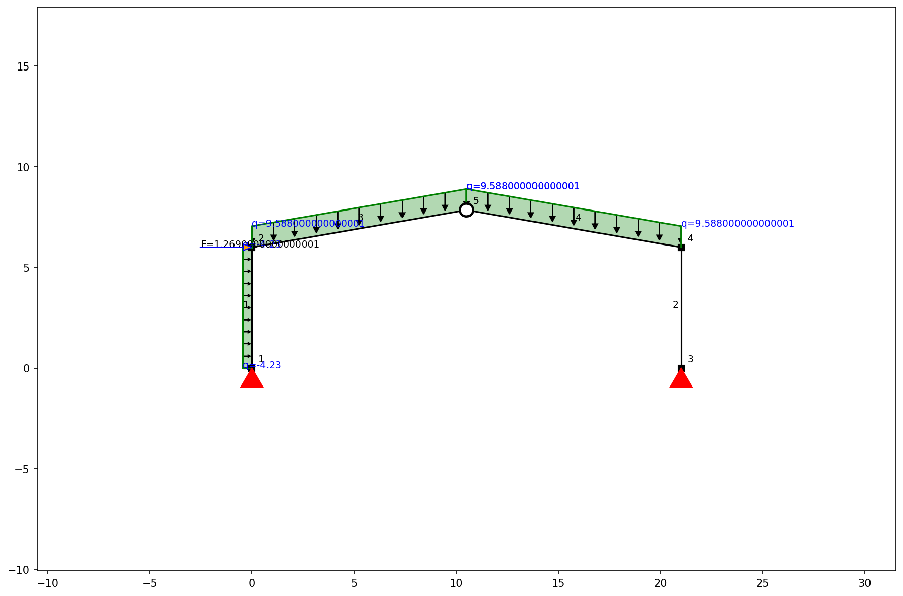
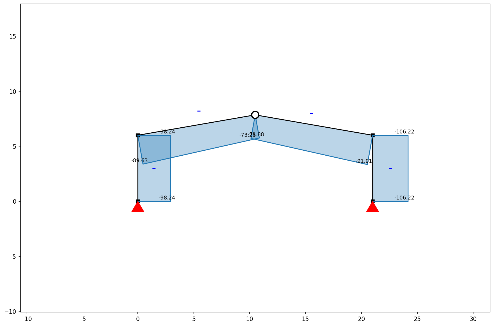
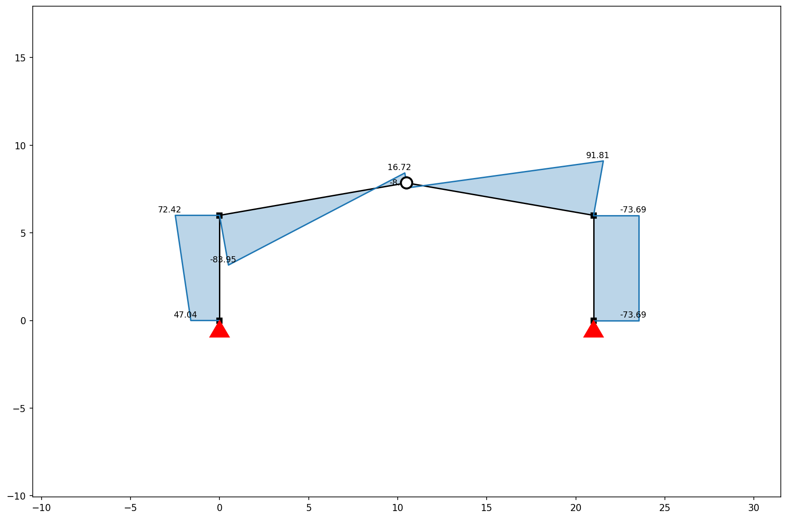
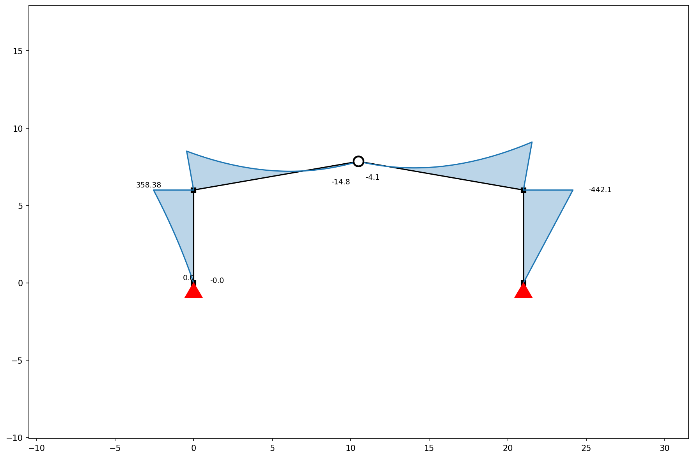
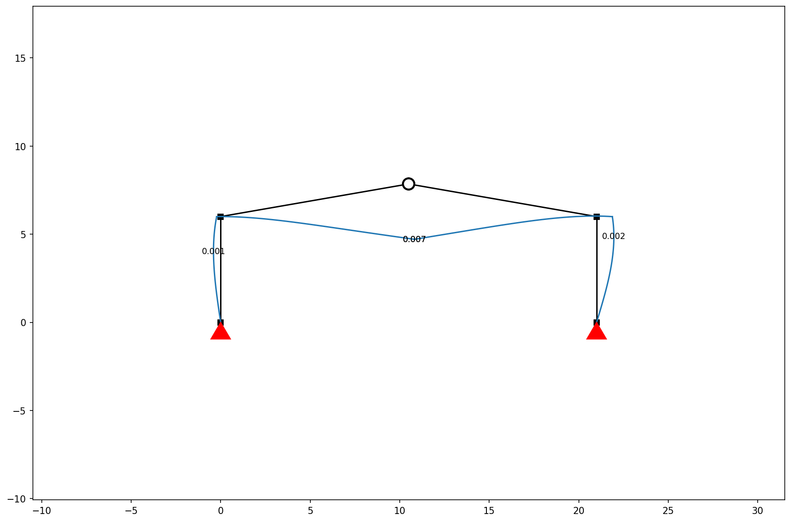
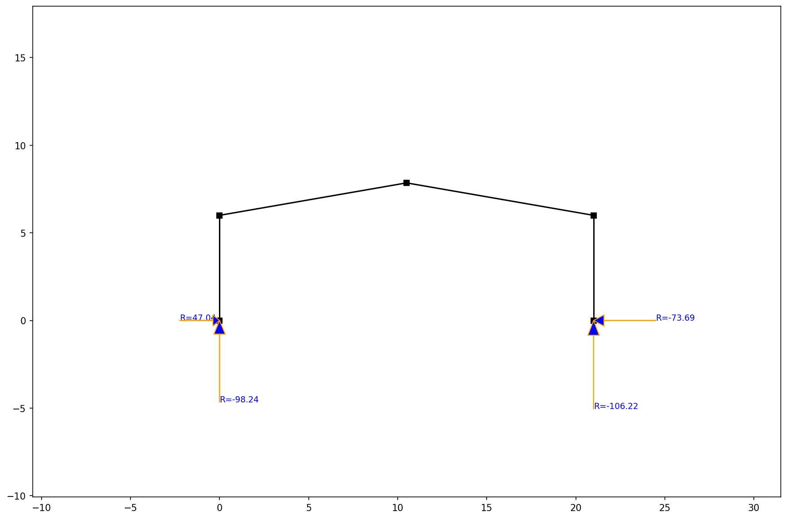

Gable Roof Structural Analysis Report
1. Frame Geometry & Loads
- Span:
21.0 m - Column Height:
6.0 m - Max Vertical Deflection:
7.41 mm(Limit: 87.50 mm)
2. Loading Data (NSCP 2015 Combinations)
- Frame Spacing:
4.7 m(Tributary Width) - Dead Load (DL):
0.9 kPa \times 4.7m = 4.23 kN/m - Roof Live Load (LR):
0.6 kPa \times 4.7m = 2.82 kN/m - Governing Combination (\(1.2D + 1.6L\)):
1.2(4.23) + 1.6(2.82) = 9.59 kN/m(Applied as UDL)
Optimized Member Selection
| Group | Selected W-Shape | Weight (plf) | Area (in²) | Ix (in⁴) |
|---|---|---|---|---|
| Beam | W6X15 |
15.0 | 4.43 | 29.1 |
| Column | W6X8.5 |
8.5 | 2.52 | 14.9 |
- Total Steel Weight (per frame):
627.7 kg - Estimated Material Cost:
PHP 40,802.24(@ PHP 65/kg)
2. Foundation Design (Base Plate, Pedestal & Footing)
Base Plate Details
| Parameter | Value |
|---|---|
| Dimensions (\(B \times N\)) | 300mm x 300mm |
| Thickness (\(t\)) | 16mm |
| Anchor Bolts | 4 nos. 20mm \phi A325 Bolts |
| Grout Thickness | 25 mm |
Concrete Pedestal
| Parameter | Value |
|---|---|
| Dimensions | 500mm x 500mm |
| Vertical Load (\(P_u\)) | 98.24 kN |
| Vertical Reinforcement | 8 nos. 16mm \phi Bars |
| Lateral Ties | 10mm \phi @ 200mm o.c. |
| Concrete Strength (\(f'_c\)) | 21 MPa (3000 psi) |
Isolated Square Footing
| Parameter | Value |
|---|---|
| Dimensions | 1.5m x 1.5m |
| Thickness | 0.40 m |
| Depth of Bottom | 1.50 m below Ground Level |
| Main Reinforcement | 12mm \phi @ 150mm o.c. (Bottom BW) |
| Soil Bearing Cap | 120 kPa (Assumed) |
3. Visualizations
Frame Structure & Loads

Axial Force Diagram

Shear Force Diagram

Bending Moment Diagram

Displacement Plot

Reaction Forces
